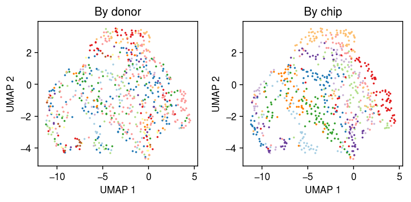
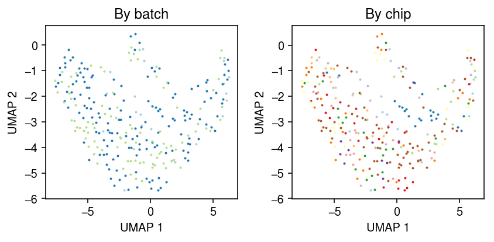
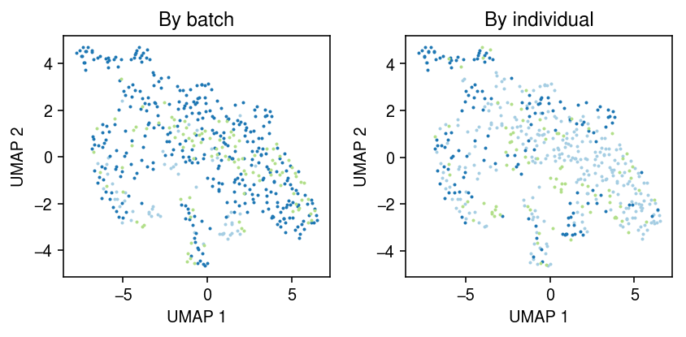
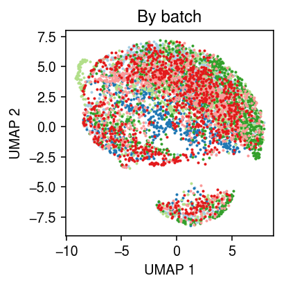

Mutual nearest neighbors in topic model space
Table of Contents
Introduction
Haghverdi et al 2018 introduce a method for batch correction based on identifying mutual nearest neighbors. The key idea of the method is to identify cells which should have "equal gene expression" across batches, and compute correction factors based on the observed differences in gene expression, where "difference" is cosine distance. The key intuition of the method is "Proper removal of the batch effect should result in the formation of…clusters, one for each cell type, where each cluster contains a mixture of cells from both batches."
Our use of MNN pairs involves three assumptions: (i) there is at least one cell population that is present in both batches, (ii) the batch effect is almost orthogonal to the biological subspace, and (iii) batch effect variation is much smaller than the biological effect variation between different cell types
Here, we first investigate these assumptions using real data to generate a null batch effect. Then, we investigate using NMF/LDA to estimate true gene expression under the generative model
\begin{align*} x_{ij} \mid s_i, \lambda_{ij} &\sim \operatorname{Poisson}(s_i \lambda_{ij}) \lambda_{ij} &= \sum_{k=1}^K l_{ik} f_{jk} \end{align*}and compare the results against previous approaches based on cosine distance, or Euclidean distance in a principal component subspace.
Setup
import anndata import numpy as np import pandas as pd import scanpy.api as sc import sklearn.decomposition as skd
%matplotlib inline %config InlineBackend.figure_formats = set(['retina'])
import matplotlib.pyplot as plt plt.rcParams['figure.facecolor'] = 'w' plt.rcParams['font.family'] = 'Nimbus Sans'
Methods
Fast approximate nearest neighbors
- M. Aumüller, E. Bernhardsson, A. Faithfull: ANN-Benchmarks: A Benchmarking Tool for Approximate Nearest Neighbor Algorithms. Information Systems 2019. 10.1016/j.is.2019.02.006 https://github.com/erikbern/ann-benchmarks
Results
iPSC data
Load the iPSC data.
x = anndata.read_h5ad('/project2/mstephens/aksarkar/projects/singlecell-ideas/data/ipsc/ipsc.h5ad')
Take all cells from batch 1. A priori, there could be clusters by individual and plate.
y = x[x.obs['batch'] == 'b1']
Use the default approach, projecting \(\ln(x+1)\) into a principal component subspace and computing nearest neighbors.
sc.pp.neighbors(y)
sc.tl.umap(y, copy=False)
cm = plt.get_cmap('Paired') plt.clf() fig, ax = plt.subplots(1, 2) fig.set_size_inches(6, 3) for i, k in enumerate(y.obs['chip_id'].unique()): query = y[y.obs['chip_id'] == k].obsm['X_umap'] ax[0].scatter(query[:,0], query[:,1], s=1, c=cm(i), label=k) ax[0].set_title('By donor') for i, k in enumerate(y.obs['experiment'].unique()): query = y[y.obs['experiment'] == k].obsm['X_umap'] ax[1].scatter(query[:,0], query[:,1], s=1, c=cm(i), label=k) ax[1].set_title('By chip') for a in ax: a.set_xlabel('UMAP 1') a.set_ylabel('UMAP 2') fig.tight_layout()

Take all cells from NA18507. A priori, there could be clusters by batch.
y = x[x.obs['chip_id'] == 'NA18507'] sc.pp.neighbors(y) sc.tl.umap(y, copy=False)
cm = plt.get_cmap('Paired') plt.clf() fig, ax = plt.subplots(1, 2) fig.set_size_inches(6, 3) for i, k in enumerate(y.obs['batch'].unique()): query = y[y.obs['batch'] == k].obsm['X_umap'] ax[0].scatter(query[:,0], query[:,1], s=1, c=cm(i), label=k) ax[0].set_title('By batch') for i, k in enumerate(y.obs['experiment'].unique()): query = y[y.obs['experiment'] == k].obsm['X_umap'] ax[1].scatter(query[:,0], query[:,1], s=1, c=cm(i), label=k) ax[1].set_title('By chip') for a in ax: a.set_xlabel('UMAP 1') a.set_ylabel('UMAP 2') fig.tight_layout()

Look at the all cells from all individuals measured in both batches 1 and 2.
ix = set(x.obs.loc[x.obs['batch'] == 'b1','chip_id']) & set(x.obs.loc[x.obs['batch'] == 'b2','chip_id']) ix
{'NA18507', 'NA18508', 'NA19190'}
y = x[x.obs['chip_id'].isin(ix)] sc.pp.neighbors(y) sc.tl.umap(y, copy=False)
cm = plt.get_cmap('Paired') plt.clf() fig, ax = plt.subplots(1, 2) fig.set_size_inches(6, 3) for i, k in enumerate(y.obs['batch'].unique()): query = y[y.obs['batch'] == k].obsm['X_umap'] ax[0].scatter(query[:,0], query[:,1], s=1, c=cm(i), label=k) ax[0].set_title('By batch') for i, k in enumerate(y.obs['chip_id'].unique()): query = y[y.obs['chip_id'] == k].obsm['X_umap'] ax[1].scatter(query[:,0], query[:,1], s=1, c=cm(i), label=k) ax[1].set_title('By individual') for a in ax: a.set_xlabel('UMAP 1') a.set_ylabel('UMAP 2') fig.tight_layout()

Plot the full data, colored by batch.
sc.pp.neighbors(x)
sc.tl.umap(x, copy=False)
cm = plt.get_cmap('Paired') plt.clf() plt.gcf().set_size_inches(3, 3) for i, k in enumerate(x.obs['batch'].unique()): query = x[x.obs['batch'] == k].obsm['X_umap'] plt.scatter(query[:,0], query[:,1], s=1, c=cm(i), label=k) plt.title('By batch') plt.xlabel('UMAP 1') plt.ylabel('UMAP 2') plt.tight_layout()

NMF
Instead of PCA, use NMF and normalize to a topic model as the latent space.
m = skd.NMF(n_components=10, solver='mu', beta_loss=1, max_iter=1000, verbose=True) l = m.fit_transform(x.X) f = m.components_
weights = l * f.sum(axis=1) topics = f.T / f.sum(axis=1) s = weights.sum(axis=1, keepdims=True) weights /= s
x.obs['topic_scale'] = s x.obsm['topics'] = weights x.varm['topics'] = topics x.write('/project2/mstephens/aksarkar/projects/singlecell-ideas/data/ipsc/ipsc.h5ad')
TODO: this segfaults.
sc.pp.neighbors(x, use_rep='topics') sc.tl.umap(x, copy=False)
0 - 36d6e328-d507-454e-9ac5-657bf63ae113